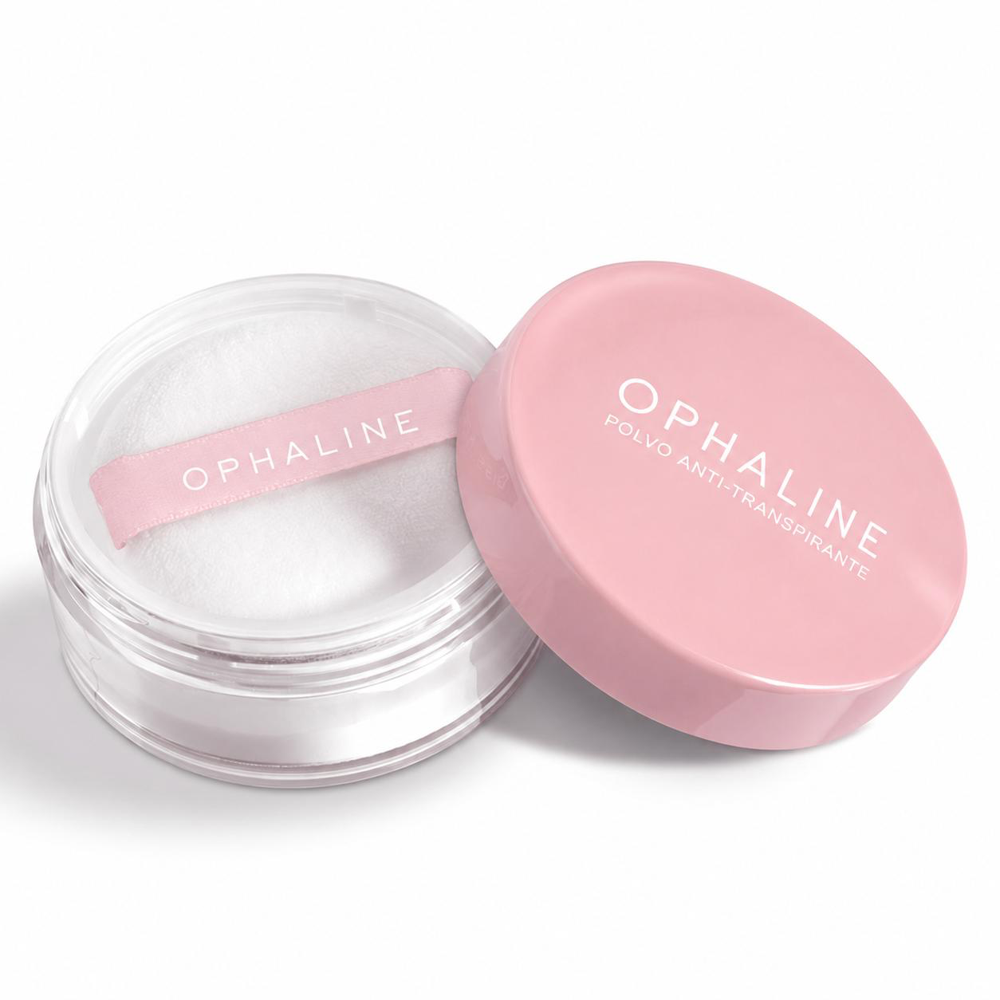
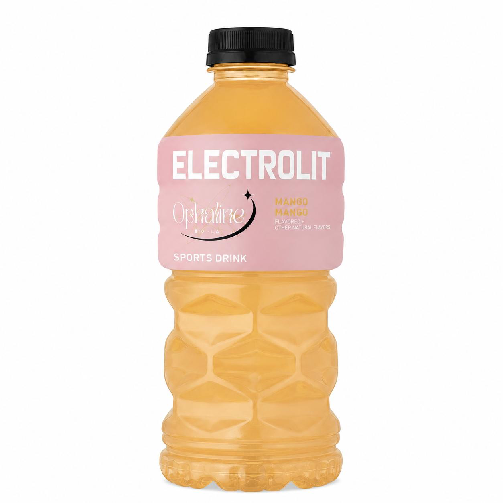
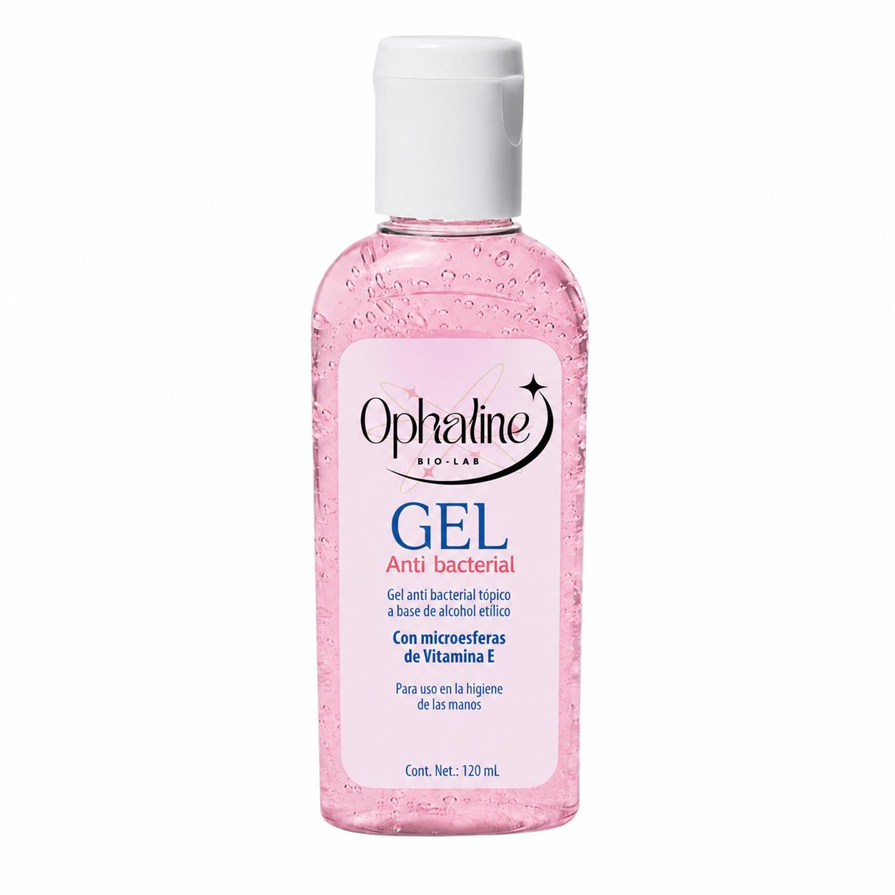

Proyecto escolar enfocado en la elaboración de productos útiles para el cuidado personal y la salud.
Productos elaborados con ingredientes accesibles para la higiene e hidratación diaria.
Ver ProductosSomos un proyecto escolar enfocado en la elaboración de productos útiles para el cuidado personal y la salud. Nuestros productos son elaborados con ingredientes accesibles y buscan brindar soluciones prácticas para el bienestar diario.
Somos estudiantes interesados en aplicar conocimientos de laboratorio para elaborar productos que contribuyan al bienestar de las personas.
Desarrollar productos seguros, funcionales y de fácil acceso para promover la higiene y la hidratación.

Es un producto diseñado para absorber la humedad y reducir el mal olor causado por la sudoración.
Aplicar una pequeña cantidad sobre la piel limpia y seca.

Son una bebida que ayuda a reponer líquidos y minerales perdidos por el sudor o la deshidratación.
Consumir de manera moderada y preferentemente fría.

Es un producto que ayuda a disminuir la cantidad de microorganismos presentes en las manos.
Aplicar una pequeña cantidad y frotar las manos hasta que el producto se seque.
¿Son seguros?
Sí, siempre que se utilicen correctamente y siguiendo las indicaciones.
¿Cuál es el principal beneficio del polvo antitranspirante?
Ayudar a controlar la humedad y el mal olor.
¿Cuándo se recomienda consumir electrolitos?
Después de actividad física o cuando existe pérdida de líquidos.
¿Para qué sirve el gel antibacterial?
Para ayudar a mantener una adecuada higiene de las manos.
Integrantes: Aguirre L, Alvarado J, Chavez C, Hernández J, Juárez A, Lozoya G, Villalobos E.
Materia: Elabora un producto.
Escuela: Centro de Bachillerato Tecnológico Industrial y de Servicios No. 128
Correo: ophaline128@gmail.com